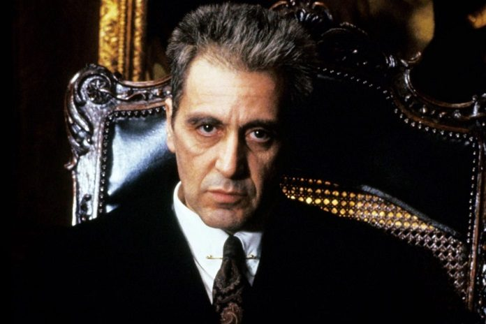
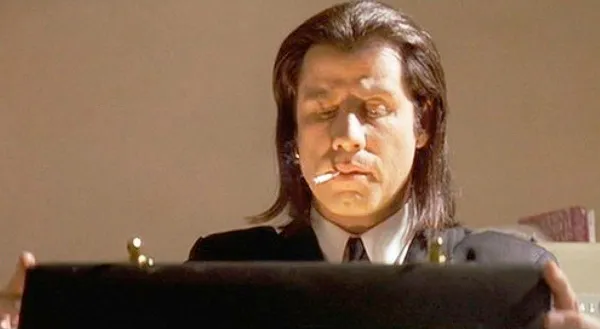
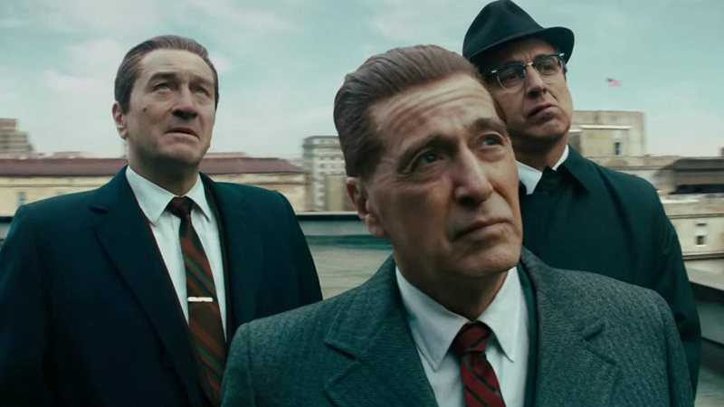

Inspirado no romance homônimo de Mario Puzo, o enredo é passado na década de 40, em Nova York, e se foca na figura de Don Corleone, um mafioso extremamente influente. Quando a saúde do patriarca começa a se deteriorar, a família precisa se reorganizar para manter o poder e derrubar seus inimigos.
Scarface
Um criminoso cubano exilado (Al Pacino) vai para Miami e em pouco tempo está trabalhando para um chefão das drogas. Sua ascensão na quadrilha é meteórica, mas quando ele começa a sentir interesse na amante do chefe (Michelle Pfeiffer) este manda matá-lo.
Pulp Fiction

Dirigido de uma forma altamente estilizada, Pulp Fiction narra três histórias diferentes, todavia entrelaçadas, sobre dois assassinos profissionais, o gângster que os chefia e sua esposa, um pugilista pago para perder uma luta e um casal assaltando um restaurante, em Los Angeles na década de 1990.
O Irlandês

Conhecido como "O Irlandês", Frank Sheeran (Robert De Niro) é um veterano de guerra cheio de condecorações que concilia a vida de caminhoneiro com a de assassino de aluguel número um da máfia.